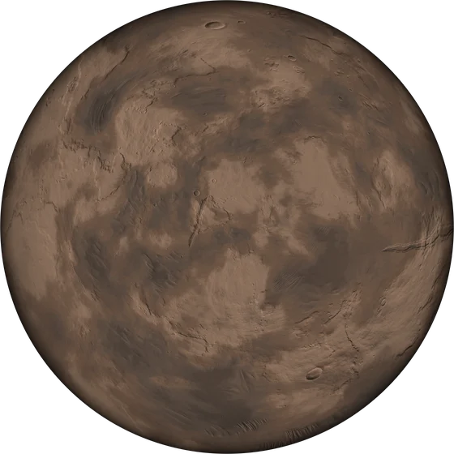

BASE · LA COMPAGNIE
Missions
Compagnie C-793marines prêts
Au sol3à explorer
Dans le système2dont 1 pour l'objectif

5 000 km10 000 kmde l'autre côté123 NAu sol · Cinis II 3
1
Capsule de sauvetage S-2
nouveausud-est, 9 700 km
Escouade10
Aller-retour1 h 12
Risquesans risque
2
Drone de reconnaissance
nouveausud-est, 4 700 km
Escouade12
Aller-retour1 h 36
Risquesans risque
3
Épave ancienne
de l'autre côté, 10 200 km
Escouade16
Aller-retour2 h
Risquesans risque
Capsule de sauvetage S-2 · repéré il y a 2 j 13 h
La capsule S-2, la dernière larguée pendant la rentrée, juste avant que l'Astrée se brise, repose intacte au fond d'un cratère : son sas est verrouillé sur un code de ta garde.
Agrandit la caserne : +5 couchettes · +12 XP
Dans le système 2
×2
4Écho du relaisobjectif
La Passe de Sarn, balise 4
Escadre2 corvettes7 à quai
Aller-retour10 h 34
Risquesans risque
×1
5Les soutes du receleurnouveau
La Passe de Sarn, les soutes larguées
Escadre1 transporteur1 à quai
Aller-retour11 h 22
Risquesans risque
Station de récupération
Étape 1 sur 4 · la suivante : Broyeur
Plaques
Il manque 2 plaques